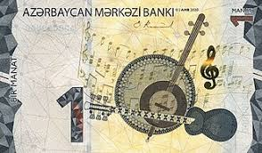

Head of State and Government:
President: Ilham Aliyev, assisted by prime minister: Ali Asadov
Capital:
Baku (Bakı)
Population:
(2025 est.) 10,262,000
Official language:
Azerbaijani
Official name:
Azərbaycan Respublikası (Republic of Azerbaijan)
Monetary Unit:
AZN (manat)

Time Zone:
(UTC+4)